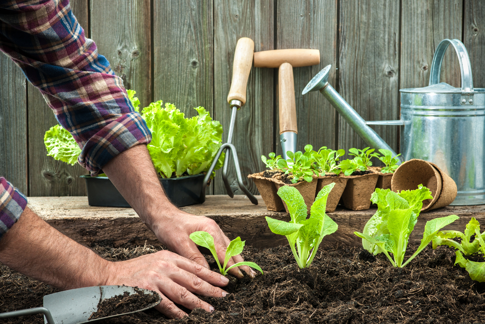
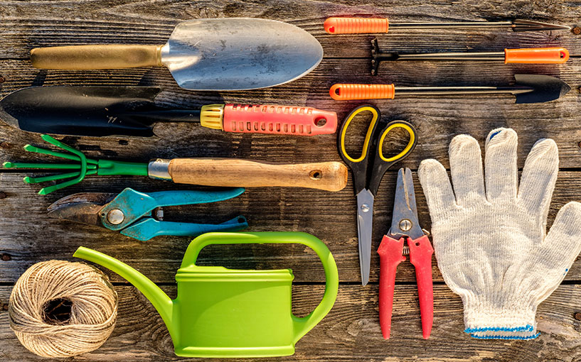
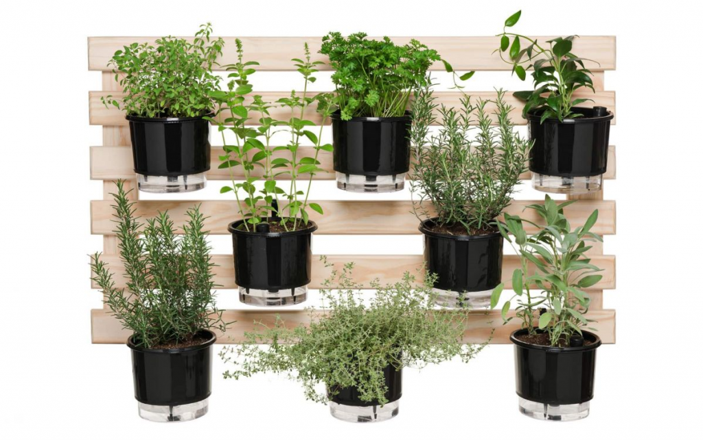
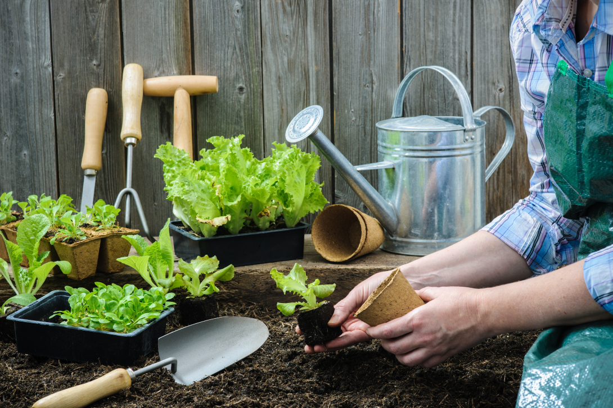
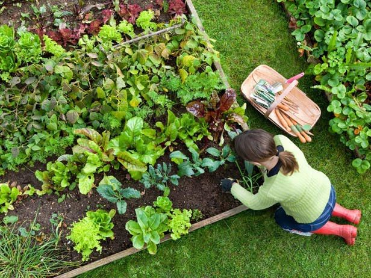

A grande maioria das hortaliças, vegetais e até mesmo ervas cultivadas em hortas gostam e principalmente precisam de horas de exposição ao sol. Ainda que existam espécies menos exigentes, a maior parte delas precisa de pelo menos 5 horas diárias de contato direto com a luz.
O sol da manhã e o de fim da tarde (alternando os horários) são os mais recomendados e que apresentam os melhores resultados. Se o local de cultivo não tiver contato direto com a luz solar (nem que seja mínimo) lamentamos dizer que será realmente muito difícil conseguir que as espécies se desenvolvam.
No entanto algumas opções como espinafre, rúcula, rabanetes e algumas couves não demonstram infelicidade de estar à sombra e em períodos muito quentes do verão até agradecem.
Com a ajuda da luz solar pode-se plantar praticamente tudo: pimentas, alfaces, abóboras, cebolinhas, cenouras, ervilhas, cebolas, alhos, tomates, entre outras várias espécies.
Ainda que a horta seja pequena, precisará de algumas ferramentas básicas ou terá suas tarefas dificultadas. São itens simples e muito conhecidos, ainda que você não esteja muito familiarizado com o hábito de plantar.
São eles:
1-Ancinho (que pentea o solo para receber as sementes após o processo da sementeira)
2-Pá de plantar
3-Pá larga para transplante de mudas
4-Regador jato fino ou chuveiro
5-Enxada grande/pequena (para cavar)
6-Tesoura de poda
7-Faca de colheita
-Adubo orgânico
-Substrato
-Balde
-Carrinho de mão (caso a horta seja grande, pois precisará transportar os materiais)
-Cesto para colheita
É superpossível construir hortas em pequenos espaços, inclusive em vasos. Uma hortinha com 5 ou 10 m² por exemplo já é o suficiente para uma significativa produção.
Para tornar a tarefa organizada, evitar sujeiras indesejadas e facilitar a manutenção da horta em casa é preciso delimitar o espaço que a receberá. As opções são as mais diversas. Você pode utilizar tijolos, pedras, madeira ou até mesmo divisores de solo.
Os vasos também são opções práticas e possíveis, principalmente para quem mora em apartamento. O tamanho, modelo e material vai de acordo com as espécies que cultivará e com seu gosto.
É possível utilizar até mesmo materiais reciclados para montar a horta. Como por exemplo garrafas pet e caixas de leite. Além de barata é uma alternativa sustentável.
As hortas verticais também fazem o maior sucesso, especialmente com a galera dos apartamentos. Esse modelo de horta baseia-se em colocá-la na parede de forma vertical ou horizontal, e para isso há os mais diversos tipos de treliças, suportes e vasos.
A irrigação é uma parte importantíssima do processo de cultivo e a maneira como é realizada influencia muito no desenvolvimento das plantas. O excesso de água é tão prejudicial quanto a falta dela pois pode causar o apodrecimento das raízes, por isso é necessário que os vasos sempre possuam furos no fundo.
Outra saída é a utilização dos vasos autoirrigáveis. Eles possuem cordões de algodão que funcionam como raízes artificiais e conduzem a água até as raízes da planta, umedecendo conforme a necessidade de cada espécie. Prático e eficaz.
O preparo do solo é sem dúvidas um dos itens mais importantes e necessários para a criação da horta. É preciso certificar-se que o solo seja rico em nutrientes e matéria orgânica para que as plantas possam crescer com saúde, resultando em hortaliças e vegetais de qualidade.
Existem diversas misturas já preparadas prontas para o plantio, mas para quem deseja realizar a preparação em casa não há segredo algum. Basta misturar 1/3 de terra preta, 1/3 de vermiculita e 1/3 de matéria orgânica (húmus de minhoca, esterco de galinha, entre outros compostos).
A leveza e drenagem do solo também precisam ser observados pois são importantes para que o solo não fique compactado e as raízes possam se desenvolver ocupando todo o espaço que têm. Essas duas características contribuem também para um solo não encharcado que pode acarretar no apodrecimento das raízes ou até mesmo no desenvolvimento de fungos.
Manter o solo da horta rico em nutrientes é um passo que ajudará no crescimento de plantas viçosas, saudáveis e bem desenvolvidas. As plantas são um tanto quanto exigentes quando o assunto é nutrição e sendo assim, ainda que o solo seja preparado é necessário realizar adubações complementares a cada 20 dias.
A adubação faz-se necessária também após a colheita. O solo precisa receber uma nova remessa de nutrientes antes de receber o plantio de novas espécies.
Essas adubações periódicas podem ser feitas com os mesmos compostos orgânicos utilizados no preparo do solo ou até mesmo com adubos químicos (como os NPK), mas, já que a intenção é a criação de uma horta orgânica dispensamos esse tipo de adubação. Afinal, quanto maior a variedade de adubos orgânicos melhor para a saúde das plantas e claro, da sua família.
